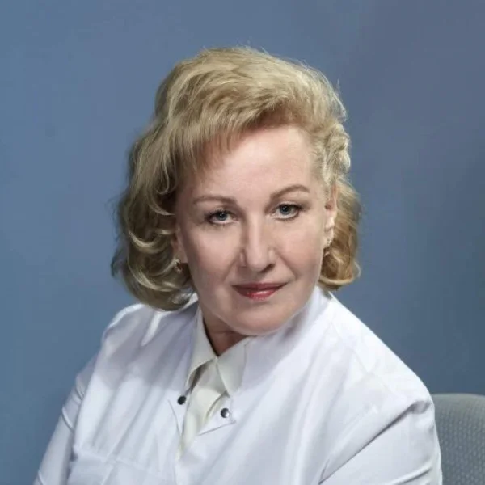

Доктор медицинских наук, академик АМТН, врач офтальмолог высшей категории, изобретатель СССР и РФ. Основатель нового направления в науке - офтальморефлексотерапии.
- Стаж врачебной практики 44 года, из них проработала 23 года в кабинете охраны зрения детей в Чебоксарах, затем 21 год принимала взрослых и детей в Москве и МО;
- Помогаю взрослым и детям эффективно найти причину ухудшения зрения и справиться с ней. Работаю с близорукостью, дальнозоркостью, косоглазием, астигматизмом, катарактой, глаукомой, дегерацией сетчатки и другими патологиями органа зрения.
- Применяю свои оригинальные запатентованные технологии для улучшения зрения и здоровья. Экспересс-диагностика зрительного анализатора.
- Изобретатель серии аппаратов офтальмологических цветотерапевтических импульсной фотостимуляции «ACO-05» для диагностики и коррекции зрения в медицинской и оздоровительной практике, в том числе и в домашних условиях. Применяется комплексное лечение с применением аппаратов, элементов мануально-, рефлексо-, краниосокральной терапии.

Материалы института: itvm.ru ↗ · Информация на 26 октября 2026 года.